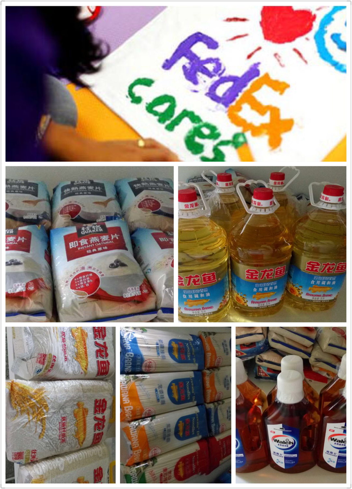
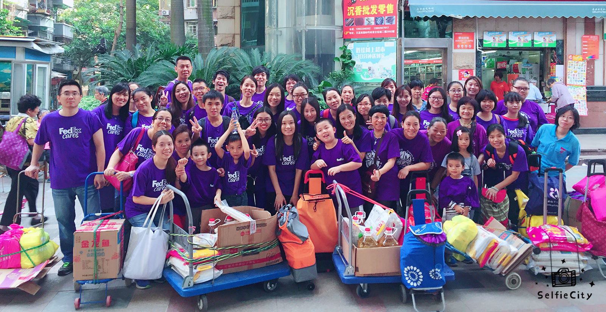
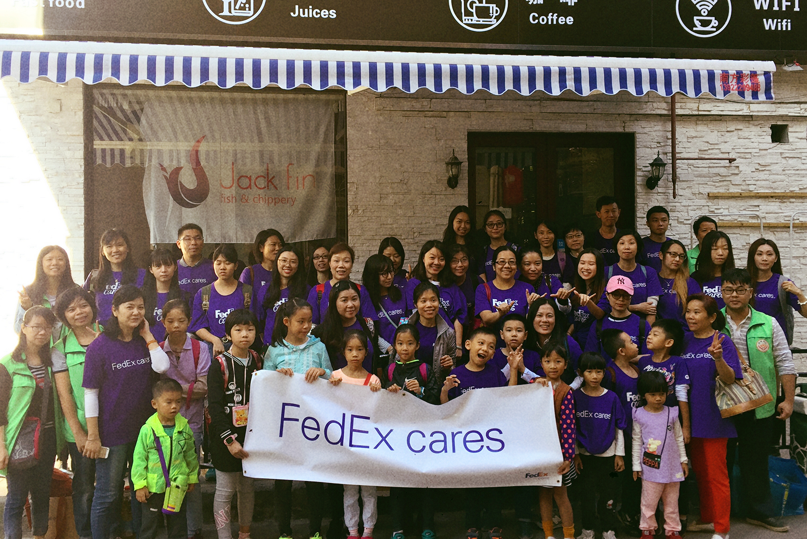
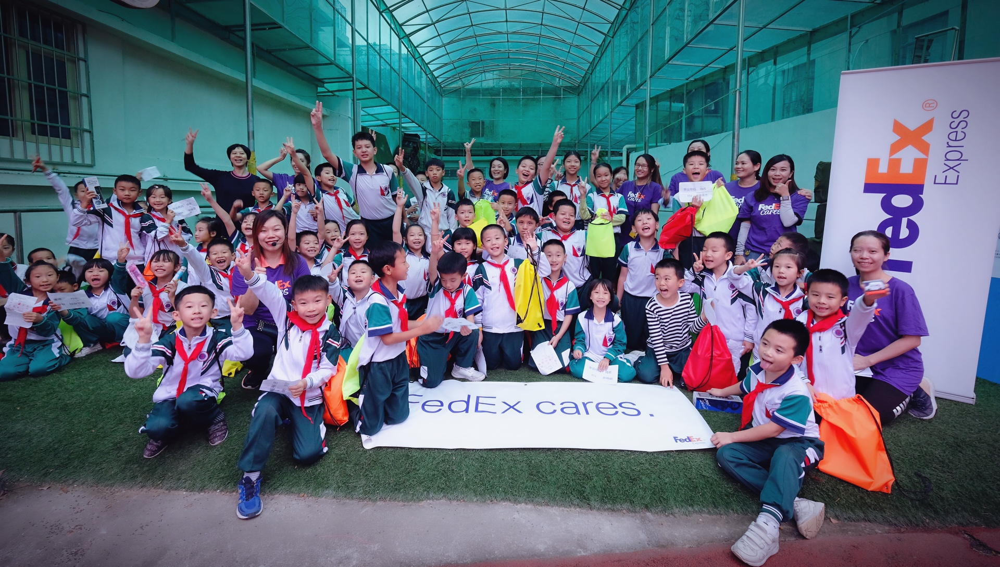
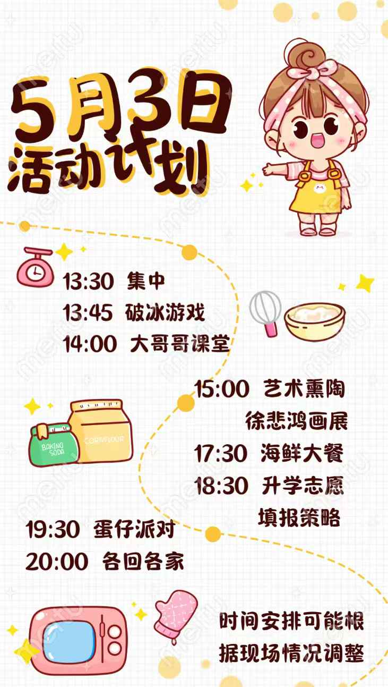

🏠 社区关爱活动
走进社区，服务老人、儿童和家庭。作为沟通桥梁，我帮助不同年龄层的人理解彼此的需求与困难。

这是第一次组织的公益活动。当时招募了约30名志愿者，探访了10个困难家庭，并为每个家庭送上价值约100元以内的生活物资。
在这个过程中，我们鼓励志愿者带上自己3岁以上的孩子共同参与。觉得"赠人玫瑰，手有余香"，应该将这种善心传递给下一代。
让孩子明白：做善事、关心身边的人，并不是一件多高大上、多复杂、有距离感的事情，而是我们力所能及，可以发生在身边的每一天。
这个活动得到了江南中街道的高度认可，并且颁发了"以心同行伙伴"的奖状。我们和志愿者都觉得受到了极大的鼓舞。


沿用了2014年在海珠区江南中街道的组织策划模式，这次志愿者的规模比之前增加了一倍。
这次活动最大的感想：建立一个可以让家长和孩子都去反思生活的平台，是一件非常重要的事情。
其意义不在于受帮助的弱势群体，或是他们给予的感激与肯定，更令我动容的是志愿者对自我生活的那种反思。
我们每次活动之后，都会有一个分享交流会。这个环节比起单纯地送一些生活必需品更加重要——它能引起大家的反思，对孩子来说，更是一种现身的言传身教。

志愿者人数超过60人，来参加的孩子也越来越多。这次活动可以用"驾轻就熟"来形容。
为了进一步肯定孩子们的积极性，我们还手工制作了"最可爱志愿者"、"小小志愿者"等小奖状作为纪念品送给他们。

这次活动的对象是二年级的四个班级。通过互动游戏的方式，志愿者与孩子们进行了沟通交流。
这也是一个特别为家庭经济相对紧张的孩子准备的活动，我们为他们准备了"慰问大书包"，里面装有各种文具、学习用品和玩具等。
这个活动相对于之前与街道对接的社区关怀活动，协作沟通方面相对简单。我的目的是为了给更多新手志愿活动组织者积累经验，从而可以将类似的活动推广到更多有需要的地方。
从2014年第一次组织活动时单纯的"赠人玫瑰，手有余香"，到明白要为志愿者提供反思生活的平台，再到这一次培养"活动搞手"的设想——我觉得活动每一次的意义都在提升，有它自己在当时不可替代的价值。

我们邀请了一位华师大文学院的大学生大哥哥，和男孩子们进行了青春期性教育活动。活动得到了孩子们正向的反馈和家长们的积极认可。
过往的公益活动多数是由家长志愿者进行的。但考虑到这次活动的特殊性，我们专门请了和孩子们同龄的大学生哥哥来演讲，让他们沟通得更加直接。
💡 作为翻译家的创新尝试
不再使用传统、遮遮掩掩、避讳的方式去进行教育。这是一次新的尝试——让同龄人之间进行更直接、更坦诚的沟通。
社区关爱活动中，我不仅是组织者，更是孩子和家长之间的"翻译家"：
• 把"做善事"翻译成孩子能理解的语言：不是遥不可及的大事，而是身边力所能及的小事
• 把家长的善意翻译成孩子能感受到的行动：让孩子参与、让孩子体验、让孩子被认可
• 把活动的意义翻译给家长看：不只是帮助别人，更是给孩子一个反思生活、学习成长的机会
从"赠人玫瑰"到"建立反思平台"再到"培养活动搞手"，每一次活动都是一次翻译的升级。